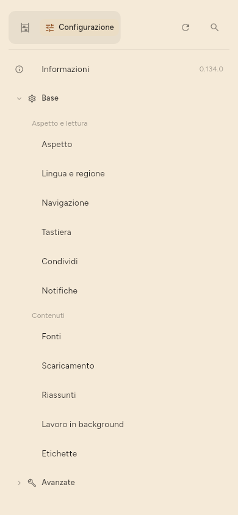

← Tastiera · Indice · Dove sono conservati i dati →
Riferimento della configurazione
Configurazione è in fondo allo scaffale. Le sue pagine sono divise in due gruppi: Base, quelle che la maggior parte delle persone modifica, e Avanzate, le altre. Informazioni è a parte, sotto di esse.

Base
- Aspetto: tema, testo, l’elenco, l’articolo e la disposizione.
- Lingua e regione: la lingua dell’interfaccia, e come si scrivono date e ore.
- Navigazione: quando un articolo aperto conta come letto, i gesti di scorrimento, e se lo scaffale è una barra laterale o è nascosto.
- Tastiera: l’elenco delle scorciatoie.
- Condividi: che cosa invia una condivisione.
- Notifiche: annunci e avvisi.
- Fonti: tutto ciò che segui, con il filtro, le caselle di spunta e le azioni su più fonti descritte in Gestire le fonti, e l’ordine in cui è tenuto l’elenco.
- Scaricamento: ogni quanto controllare, su quali connessioni e a batteria, e quante fonti alla volta.
- Riassunti: se i riassunti vengono scritti, dove, quanti alla volta e per controllo, la lingua dei riassunti, e le etichette suggerite.
- Lavoro in background: che cosa mostra la barra di stato mentre l’app lavora e, su un telefono, Configurazione › Base › Lavoro in background › A schermo spento › Continua a lavorare a schermo spento, che mantiene attivi controlli, riassunti, download dei modelli e sincronizzazione dopo lo spegnimento dello schermo.
- Etichette: il vocabolario, cioè ogni etichetta, da rinominare, unire o rimuovere.
Vale la pena conoscere Configurazione › Base › Navigazione › Segnare come letto: Mai vuol dire che solo tu segni le cose come lette, Subito vuol dire che aprire conta, Dopo qualche secondo vuol dire che passarci sopra non conta, e Quando arrivi alla fine aspetta il fondo dell’articolo. Le ultime due segnano un articolo una sola volta ogni volta che lo apri, e un segno che metti tu, letto o da leggere, vale finché non riapri l’articolo.
Avanzate
- Modello sul dispositivo: i modelli su questo dispositivo e la ricerca di nuovi, e il processore su cui gira un modello.
- Server LLM: l’indirizzo, il modello e la chiave di un server che riassume.
- Sincronizzazione: sincronizzazione attiva o no, l’indirizzo del server, quando parte da sola, se questo dispositivo tiene tutto, un altro dispositivo, il codice di recupero, e l’eliminazione della copia sul server.
- Account: i siti a cui questo dispositivo ha effettuato l’accesso, dove la versione supporta l’accesso.
- Token e API e MCP: solo in Premium, perché lo sono tutte e tre le porte: una versione gratuita non ha né la scheda né le porte, invece di interruttori che si rifiutano.
- I tuoi dati: esportazione, importazione, backup e ripristino, fonti duplicate, per quanto tempo si conservano il testo e le immagini degli articoli, e il backup di sistema.
- Statistiche: quanto ha consumato il riassunto, e che cosa contiene la libreria.
- Debug: il registro delle attività: tutto ciò che è stato eseguito e tutto ciò che è fallito, il primo posto in cui guardare quando qualcosa non è successo.
- Sviluppo: Dettagli mancanti, che scarica di nuovo i metadati, un confronto fra modelli, esperimenti, e Cancella tutto.
API & MCP (solo Premium)
Tre porte, ciascuna con la sua porta di rete, la sua scelta degli indirizzi su cui risponde, il suo token e il suo interruttore: la REST API, attraverso cui un’estensione del browser o un altro programma inserisce qualcosa, Metriche per un sistema di monitoraggio, e MCP, su cui risponde un modello. Partono da 8765, 8766 e 8767, e nessuna ha bisogno che un’altra sia aperta.
Un token apre solo ciò per cui è spuntato, in Configurazione › Avanzate › Token › Token › Modifica permessi. I permessi sono chiusi per argomento, e il campo sopra li filtra per nome o descrizione. Le preimpostazioni riempiono le spunte: Tutto tranne le rimozioni, Solo lettura, Estensione del browser, che spunta esattamente ciò che l'estensione del browser usa, e Niente.
Usa TLS (HTTPS), sotto le tre porte, è spento per impostazione predefinita e passa tutte e tre a HTTPS in un colpo solo. La prima volta, l’app crea un certificato per questo dispositivo, con il suo nome host e i suoi indirizzi, e conserva la chiave insieme agli altri segreti. I client devono allora usare https:// e fidarsi di quel certificato: la pagina mostra la sua impronta SHA-256, con un pulsante per copiarla, così un client può fissarla. Nuovo certificato ne crea un altro, e ogni client che aveva fissato la vecchia impronta deve ricevere quella nuova. Il wrapper MCP da riga di comando prende il certificato da solo; riavvia il suo client dopo un nuovo certificato.
Il lettore da terminale non è una di queste porte. Apre direttamente il file della libreria, non richiede porte aperte ed è gratuito.
I tuoi dati
Esportazione e Importazione, una sezione ciascuno: OPML per le fonti, e la tua libreria completa. Backup e ripristino copia l’intera libreria in un unico file e viceversa; Configurazione › Avanzate › I tuoi dati › Backup e ripristino › Includi accessi e token, spento ogni volta, vi aggiunge l’accesso di ogni account e ogni token, cifrati con una passphrase che digiti due volte. Quel file e la sua passphrase insieme permettono di accedere a quegli account. Un ripristino chiede la passphrase; una passphrase sbagliata o dimenticata ripristina comunque la libreria, e lascia gli accessi di questo dispositivo come erano. C’è anche Configurazione › Avanzate › I tuoi dati › Fonti duplicate, che cerca lo stesso canale seguito con due indirizzi diversi e propone di unire le coppie che trova.
Informazioni
Versione, licenze open source, informativa sulla privacy, licenza per l’utente finale e termini. Su Linux, Controlla aggiornamenti. L’informativa sulla privacy, la licenza e i termini si aprono dentro l’app, dalla copia con cui l’app è stata compilata, quindi funzionano offline. Open on the site in quella pagina mostra la versione più recente nel browser (Configurazione › Informazioni › Informativa sulla privacy, e lo stesso per gli altri due).